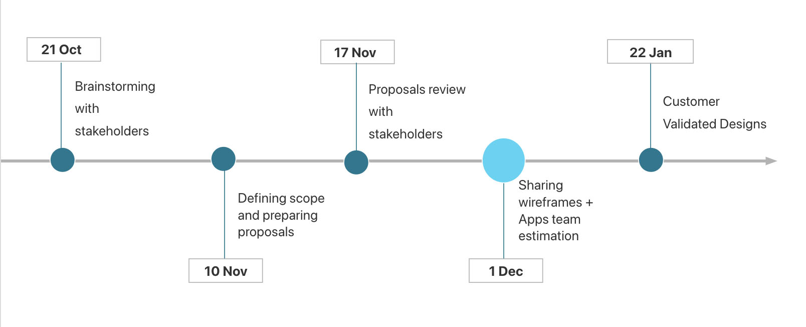

Navigation & Discoverability at CloudWatch
Leading a cross-organization initiative to simplify navigation and improve discoverability across a multi-service platform.
- Product / Company: CloudWatch (AWS)
- My role: Senior UX Designer
- Timeframe: 4 months in 2021
- Team size: 4 UX designers + 5 product and dev teams
- Product type: B2B enterprise platform (cloud monitoring and observability)
- Scale: Service with 3 million active customers and 5 product areas
The Problem / Opportunity
CloudWatch navigation had grown organically as sub-services were added for visibility, turning the left menu into a marketing surface rather than a wayfinding system. With a planned additon of an enture suite of subservices I saw an opportunity to shift navigation from visibility-driven expansion to user-centered information architecture aligned with both customer mental models and business strategy.
Key challenges
- Navigation height doubled, pushing important services below the fold
- Users struggled to locate frequently used tools efficiently
- Sub-services felt fragmented rather than part of a cohesive platform
- Competing stakeholder priorities made structural change difficult
Scope and responsibilities
- Decision Authority - Proposed the initiative, secured UX team capacity, and owned final IA direction after stakeholder alignment.
- Project Ownership - Defined research strategy, roadmap priorities, and phased release plan while coordinating cross-team delivery alongside hands-on design execution.
- Cross-Team Involvement - Partnered with five product and development teams to align scope, estimate effort, and synchronize delivery timelines.
- Research Ownership - Structured and oversaw multiple research streams including navigation surveys, card-sorting studies, and stakeholder/customer workshops. Personally led archetype and user-journey research and synthesized findings across the UX team of four.
How I drove the initiative
- Built the case for change by consolidating existing navigation pain-point data into a structured proposal, outlining expected impact, capacity requirements, and delivery options to secure early stakeholder alignment before deep research began.
- Maintained cross-team alignment between 5 teams through data-informed discussions and iterative proposal refinement, helping teams with competing priorities converge on shared objectives and reducing resistance to structural changes.
- Coordinated parallel research streams across four UX designers, distributing work based on strengths and availability while combining guerrilla journey mapping, quantitative surveys, and moderated and unmoderated card sorting to capture both behavioral patterns and mental models.
- Synthesized research findings into five core pain-point themes (information architecture clarity, UI density, customization gaps, correlation issues, and additional usability barriers), then facilitated collaborative ideation and prioritization workshops to translate insights into actionable initiatives.
- Created a phased delivery roadmap in partnership with engineering and product teams using user-story mapping, balancing customer needs with business strategy and coordinating synchronized releases across multiple product teams.

user journey mapping

high level timeline to generate engagement
Key decissions and trade-offs
- Expanded Scope Beyond Navigation - Research revealed navigation was only one of several major discoverability issues which led me to create an additional proposal focusing on quick wins by using landing pages and contextual side panel to improve learning and discovery.
- Prioritized Guerrilla Research Over Comprehensive Studies - Faced with tight timelines, leveraged existing research and AWS global archetypes, validating assumptions through targeted sessions instead of starting from scratch.
- Hybrid Card-Sorting Approach - Conducted moderated sessions first to understand reasoning behind groupings, then scaled validation through unmoderated quantitative studies — trading time upfront for stronger large-scale confidence.
- Balanced Customer Mental Models with Business Priorities - Iterated proposals through multiple revisions to align with stakeholder strategy while protecting core usability principles.
Outcomes
- Consolidated 6 landing pages into 1 global entry point, simplifying navigation paths.
- Introduced intelligent menu logic remembering expanded/collapsed states per user.
- Redesigned favorites system with recently visited services prioritized at the top.
- Established a unified menu structure by grouping sub-services into logical groups.
- Influenced roadmap priorities beyond navigation by identifying four additional high-impact problem areas.

user story board with a list of improvements split into phases
Impact
- Reduced navigation height by 50%, improving scannability and above-the-fold visibility.
- 80% of customers could now access frequently used services without scrolling
- Positive qualitative feedback from customer calls and in-product feedback channels, highlighting clearer groupings and faster access to favorites
- UX health score for findability increased by 2.5% in the next quarter
Reflections and learnings
- Early executive alignment reduces downstream conflict and accelerates difficult structural decisions.
- Collaborative stakeholder involvement builds long-term allies and lowers resistance to compromise.
- One-on-one alignment conversations are often more productive than large group debates for sensitive trade-offs.
- Combining quantitative data, qualitative insight, and customer validation grounds decisions beyond internal opinion.